Empirical Typologies & Extensions with NetHealth Data
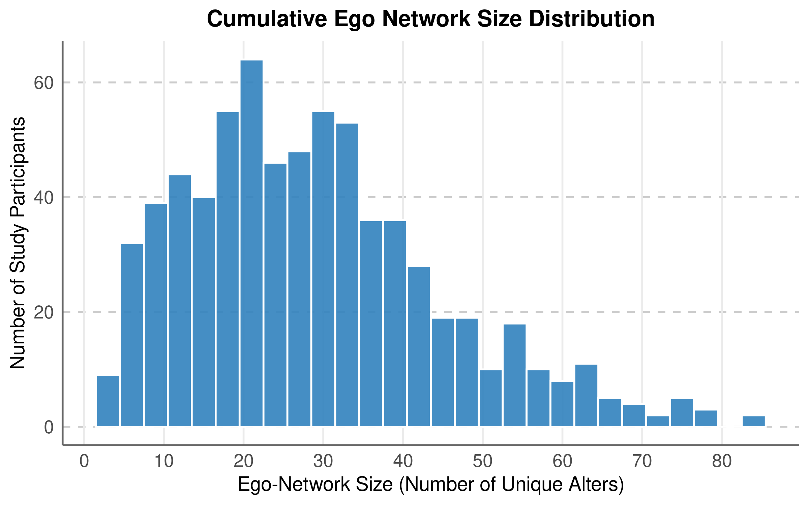
Y-Axis: Number of study participants; X-Axis: Ego-network size. Min = 3; Max = 83
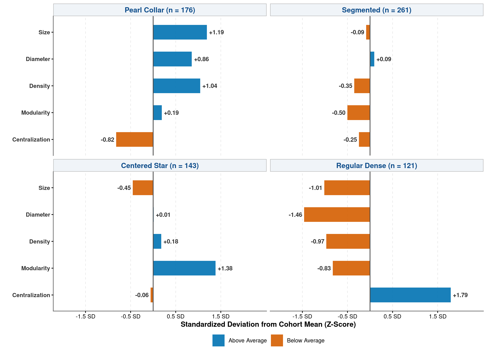
| Cluster | Typology | Size | Diam. | Dens. | Mod. | Cent. |
|---|---|---|---|---|---|---|
| 0 | Pearl Collar | + | + | – | + | + |
| 1 | Segmented | + | + | – | + | – |
| 2 | Centered Star | + | + | – | – | ++ |
| 3 | (Small) Regular Dense | – | – | ++ | – | – |
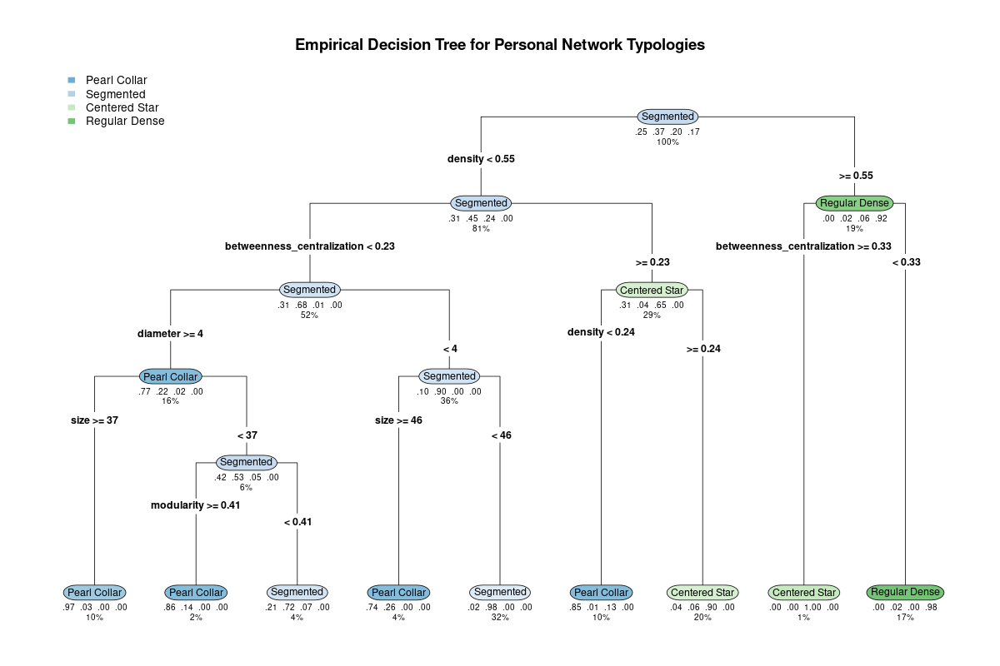
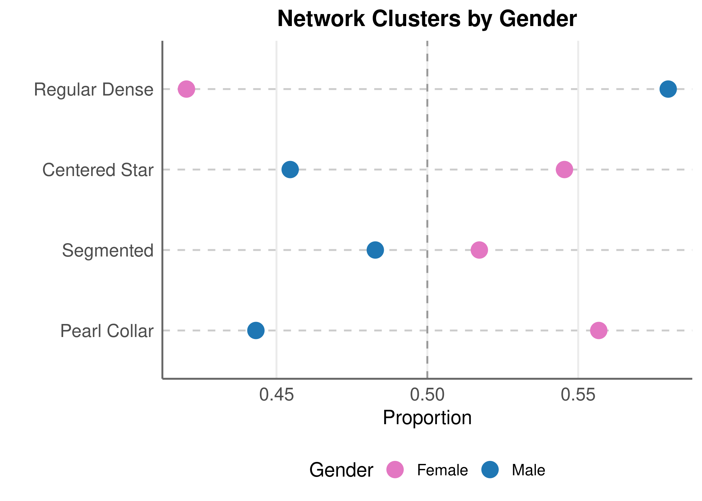
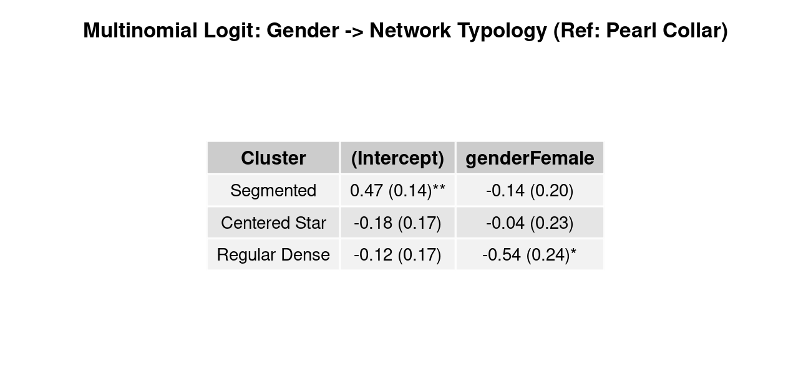
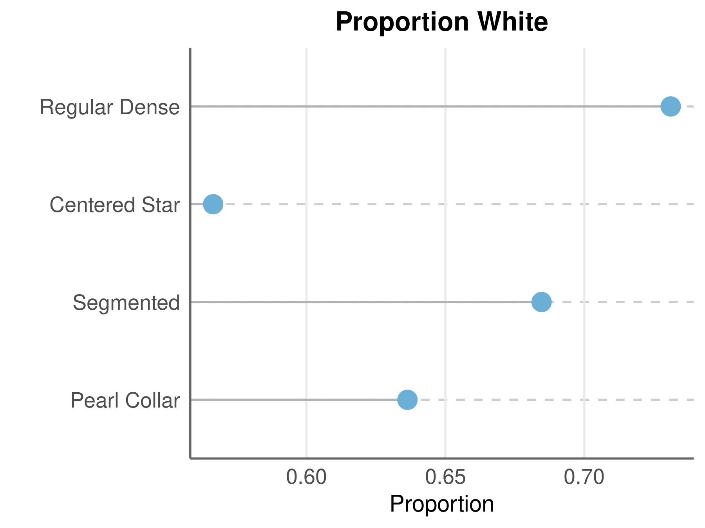
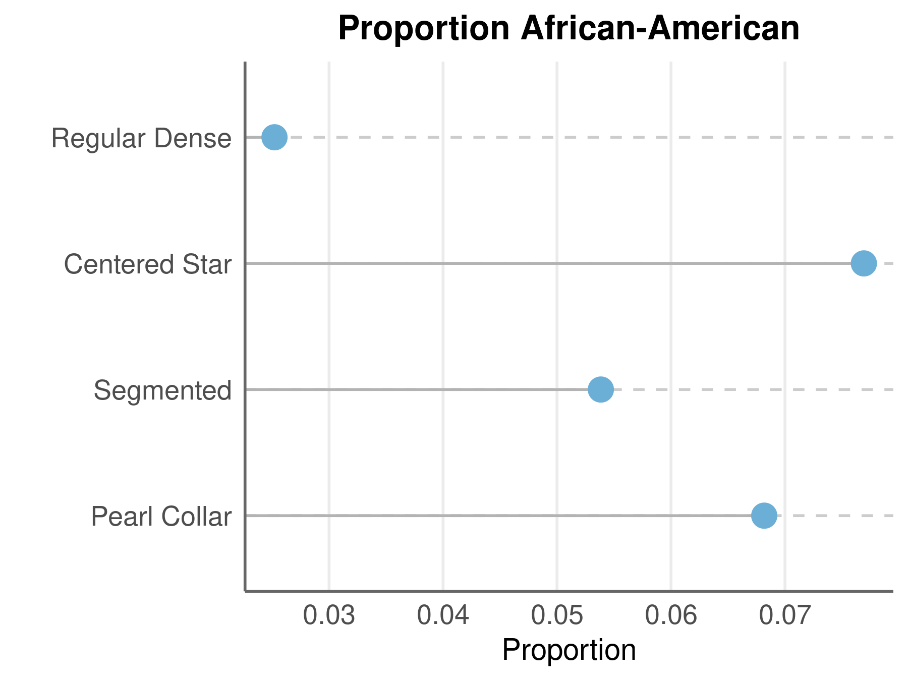
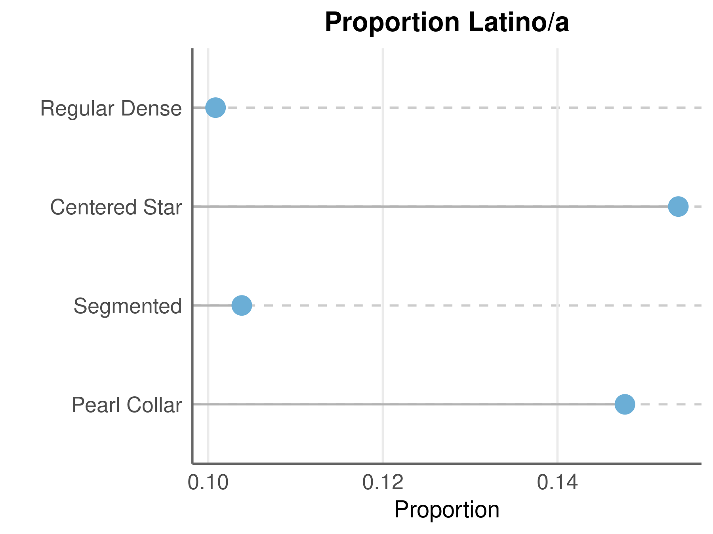
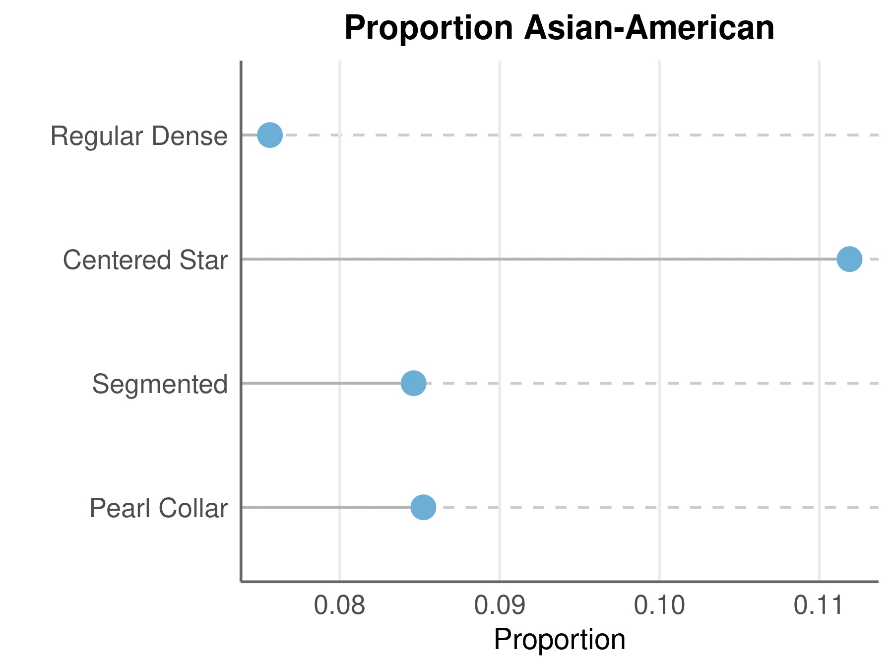
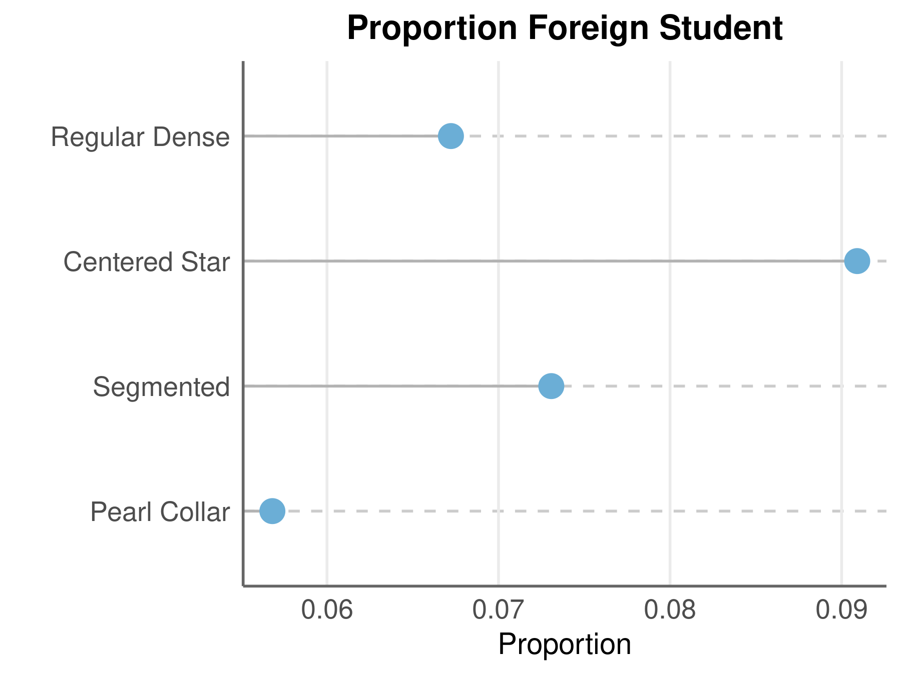
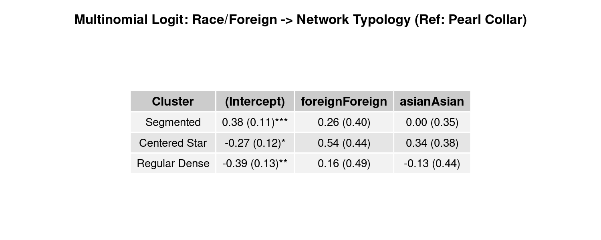
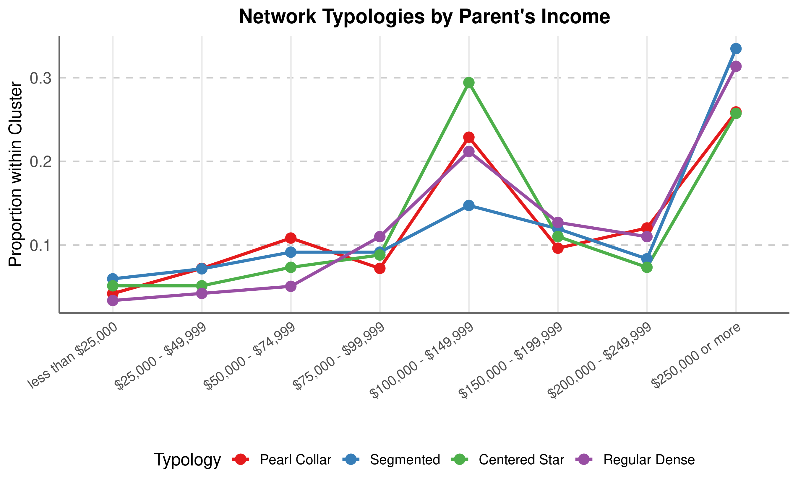
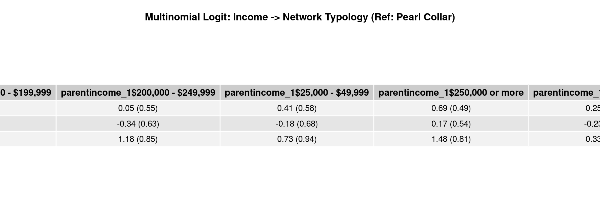
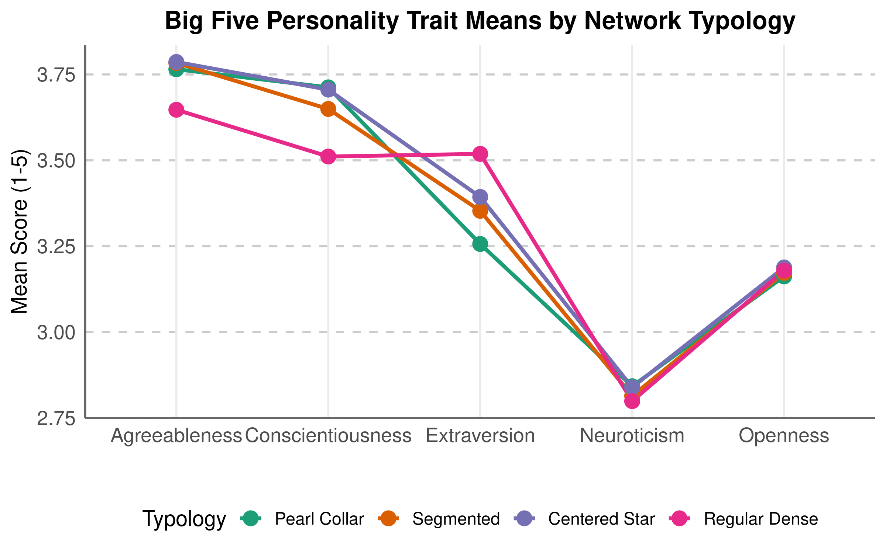
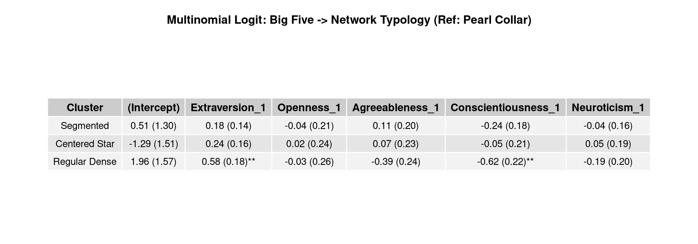